두경부 및 피부 — 피부과 강의록 (시험 대비)
강의자료: ① 표피 및 부속기의 모반과 종양(25p) · ② 색소 이상증 & 피부노화(34p) · ③ 구진비늘질환(42p) / 족보: 17-21학번 족보(84p) · 2025 시험지(10p) · 16학번본 족보(5p)
목차 1. 전체 요약 2. 강의별 상세 2-1 모반·종양 2-2 색소·노화 2-3 구진비늘 3. 개념 비교 4. 개념 간 관계 5. 족보 연결 핵심 6. 시험 직전 정리 초록 하이라이트 ① = 실제 족보 출제 + 강의자료에 존재 + 해당 문제 풀이에 필요한 내용 (번호 = §5 족보 연결 개념)📌 족보에 출제된 강의 사진★ = 학습 우선순위(출제 확률 아님)
[추론] [확인 필요] [판독 불가] [자료 근거 없음] = 근거 표기
1. 시험 대비 전체 요약
★ 족보 연계 핵심 개념 (강의자료만으로 풀 수 있는 족보 40문항 기준) # 개념 핵심 한 줄 출제 최근 중요도 강의 위치 ① 건선의 역학·악화요인 초발 10~30대, 가족력 한국 25%, 유병률 한국 1%/미국 2%, 외상 등으로 악화(Koebner) 4 2025 ★★★★★ 강의③ p.5–7, 11 ② 건선성 관절염(PsA) 건선의 6–42%, peak 35–40세, 성별 차이 없음 4 2025 ★★★★★ 강의③ p.18 ④ UVA vs UVB 특성 UVA=melanogenic·광노화, UVB=유리창 차단·직접 DNA 손상, UVB 광자 에너지 ≈1000배 4 2025 ★★★★★ 강의② p.4–6 ⑥ 암전구증(precancerous) 목록 AK·비소각화증·백판증·피각·선천성 거대모반·만성방사선피부염·XP·Bowen·Queyrat (IP는 없음) 4 2025 ★★★★★ 강의① p.4 ⑦ 표피 vs 진피 melanocytic lesion 진피 = Ota·Mongolian spot·Ito·…; 표피 = Freckle·Lentigo·Nevus spilus·Becker·CALM 4 2025 ★★★★★ 강의① p.19–20 ③ 건선 치료 · NBUVB 1차 외용 = emollient·glucocorticoid·vit D3 / 광치료는 NBUVB / retinoid·MTX 등은 전신 3 2025 ★★★★★ 강의③ p.21–23, 강의② p.17–18 ⑤ UV 급성·만성 반응, 노화 분류 급성=홍반·tanning / 만성=비후·광노화·암, 광노화=외인성 노화 3 2025 ★★★★★ 강의② p.10–12 ⑧ 백반증(Vitiligo) 성별차 없음·비유전질환, segmental/non-segmental/focal, oxidative stress, 세포성+체액성 자가면역 3 2025 ★★★★★ 강의② p.22–23, 26–28 ⑨ SCC 재발·전이 고위험 입술·귀, ≥2cm, 침윤 ≥4mm, 불완전 분화, 재발 병변, 면역억제 3 2025 ★★★★★ 강의① p.15 ⑩ 편평태선 · Wickham striae 회백색 점·선 = Wickham striae, 구강 ulcerative(erosive) = 전암 3 2019 ★★★★☆ 강의③ p.37–38 ⑫ UV의 해로운 영향 photodermatoses·광노화·면역억제·화상·백내장 등 / 유익=mood(β-endorphin) 2 16학번본(연도 미상) ★★★☆☆ 강의② p.9–10 ⑪ Koebner 현상 사소한 외상 부위에 같은 병변 발생(isomorphic response) 1 16학번본(연도 미상) ★★☆☆☆ 강의③ p.19 ⑬ 장미색잔비늘증 · herald patch 단일 herald(mother) patch로 시작 → 1–2주 후 파종, 3–8주 자연소실 1 2019 ★★☆☆☆ 강의③ p.24 ⑭ 기저세포암(BCC)의 특징 인간에서 가장 흔한 악성종양, 각질형성세포 유래, PTCH 변이, 전이율 극히 낮음 1 2019 ★★☆☆☆ 강의① p.2, 12–13
별점 산정: 출제 횟수(1회→★★, 2회→★★★, 3회→★★★★, 4회 이상→★★★★★) + 2025 시험 출제 시 1단계 가산(2회 이상). 실제 출제 확률을 의미하지 않습니다. 출제 횟수는 “강의자료만으로 풀 수 있는 문항”만 집계했고, 21개 문항(Mohs 적응증·흑색종 위험인자 등)은 제외/판단 보류했습니다(→ 족보정리 §7).
반복 출제 핵심 (3회 이상) 건선: 역학·악화요인 ①, 건선성 관절염 ②, 치료(NBUVB) ③ — 2021·2022·2023·2025 매년 출제 UV: UVA/UVB 특성 ④, 급성·만성 반응 ⑤ — 매년 출제(선지 순서까지 동일한 경우 있음) 암전구증 ⑥ (정답은 늘 IP), 진피 melanocytic lesion = Mongolian spot ⑦, 백반증 ⑧, SCC 고위험 ⑨, 편평태선 Wickham striae ⑩ 핵심 숫자 (공식 대신) 항목 값 출처 건선 유병률 / 가족력 미국 2% · 한국 약 1% ① / 백인 1/3 · 한국 약 25% ① 강의③ p.6 건선 초발 연령 20대 > 10대 > 30대 ① 강의③ p.6 건선성 관절염 건선의 6–42% ② · 일반인구 0.05–1% · peak 35–40세 ② · 성별차 없음 ② 강의③ p.18 건선 손발톱 pitting / 건선(Pso) 유병률 30–50% / 0.5–3% 강의③ p.19, p.18 UVA / UVB / UVC 320–400 / 290–320 / 200–290 nm 강의② p.4, 5, 7 MED (동양인) UVA 50–70 J/cm² · UVB 50–70 mJ/cm² (UVB가 1/1000 양) 강의② p.6 SCC 고위험 ≥2cm · 침윤 ≥4mm ⑨ · 전이: 일광손상 5% / 아랫입술 13% / 흉터 40%강의① p.14–15 BCC 전이율 / Bowen 악성화 / Queyrat 악성화 0.0028–0.55% / ≈5% (장기 42%에서 전암·암) / 10–33% 강의① p.13, p.6 거대 선천성 색소성 모반 >20cm · 흑색종 6–12% · 소아 흑색종의 ≈40% 강의① p.24 백반증 유병률 / 일등친 가족력 0.1–2% / 약 20% 강의② p.22 Kligman formula hydroquinone 5% + tretinoin 0.1% + dexamethasone 0.1% 강의② p.34 NBUVB / 엑시머 311 nm / 308 nm 강의② p.17
핵심 비교 (→ §3 참조) BCC·SCC·Bowen · 유방 Paget vs 유방외 Paget · Epidermal vs Dermal melanocytic lesion · UVA vs UVB vs UVC · Segmental vs Non-segmental 백반증 · 건선/장미색잔비늘증/PRP/편평태선 · Small vs Large plaque parapsoriasis
2. 강의별 상세 정리
2-1. 강의① 표피 및 부속기의 모반과 종양
피부 종양의 분류 (기원별) 출제 0회 · 중요도 ★☆☆☆☆ 한 줄 정의 피부 종양은 기원 세포에 따라 keratinocytic / melanocytic / adnexal / lympho-hematologic / neural·soft tissue / uncertain / inherited syndromes로 분류한다.
Keratinocytic(non-melanoma): BCC, SCC, Bowen병(SCC in situ), Merkel cell carcinoma Melanocytic: 악성흑색종 · Adnexal: eccrine·apocrine·follicular·sebaceous 분화 종양 Lympho-hematologic: mycosis fungoides 등 · Inherited: Gorlin, Muir-Torre, XP에서의 피부암 등 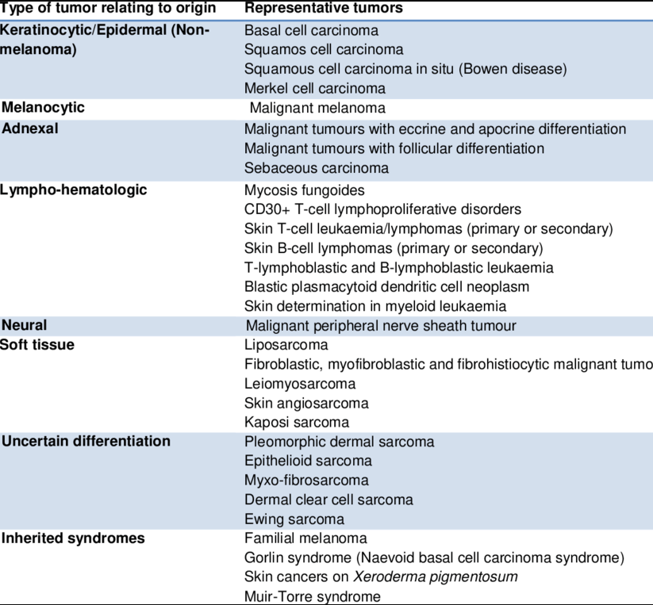
피부 종양 분류표 📗 족보 연계 이번 족보에서 강의자료만으로 풀 수 있는 출제 문항 없음
1. 광선각화증(AK)과 암전구증 출제 4회 · 중요도 ★★★★★ 한 줄 정의 만성 일광노출 부위의 각화성 종양으로 편평세포암으로 이행할 수 있는 암전구증 이며, 가장 흔한 암전구증이다.
원인 과다 일광노출 · 하얀 피부 → p53 유전자 돌연변이증상 홍색~회색 1–10mm 각화성 구진, 표면에 단단히 부착된 인설 · DDx DLE, 지루각화증, Bowen병, 편평세포암치료 전기소작, 냉동요법, 소파술, CO₂ 레이저, 5-fluorouracil 국소도포 · 예후 다발성인 경우 약 10%가 10년 내 편평세포암으로 이행전구암증(precancerous conditions) : 광선각화증, 비소각화증, 백판증(leukoplakia), 피각, 선천성 거대 색소성모반, 만성방사선피부염, 색소성 건피증, Bowen병, Queyrat 홍색비후증 ⑥ (강의① p.4) 암전구증 목록을 외워 두면 “전구암증이 아닌 것”은 목록에 없는 질환(족보: 매년 IP)이다. [IP는 강의자료에 없음 → 목록에 없다는 사실로 판단]
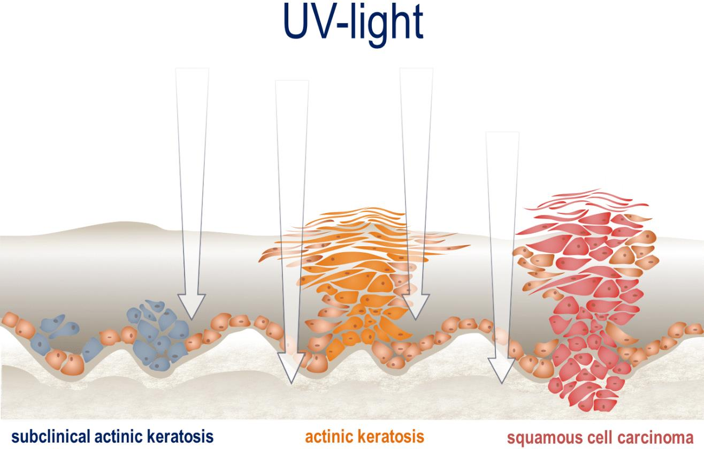
UV에 의한 subclinical AK → AK → SCC 진행 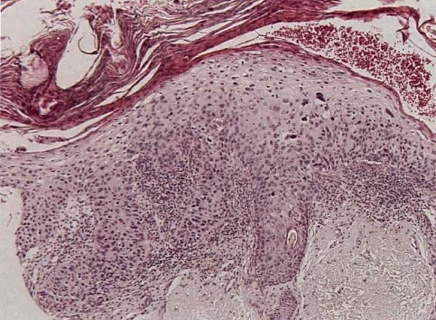
광선각화증의 조직병리학 소견 📗
족보 연계 ⑥ 암전구증(precancerous) 목록 — 출제 4회 · 최근 2025 · ★★★★★ [족보: 2025 시험지 80번 · 2023 족보 37번 · 2022 족보 75번 · 2021 족보 68번]
2. Bowen병과 Queyrat 홍색비후증 출제 0회 · 중요도 ★★☆☆☆ 한 줄 정의 표피 내에 국한된 편평세포암(squamous cell carcinoma in situ)이다.
원인 노출부위=만성 일광노출 / 비노출부위=비소중독·방사선치료·바이러스(HPV16 33–64%)증상 직경 수 mm~수 cm, 경계가 뚜렷한 홍반성 원형·부정형 판. 구진상·사마귀 모양, 인설·가피 동반DDx Paget병, 악성흑색종, 기저세포암, 건선, 화폐상습진, 체부백선, 원판상 홍반성루푸스치료 단순절제, 모즈미세도식수술, 전기소작, 냉동, CO₂ 레이저, 방사선, 광역동치료 · 예후 약 5%가 편평세포암으로 이행, 장기적으로 약 42%에서 피부·점막의 전암 또는 암 발생Queyrat 홍색비후증 : 음경 귀두·포피에 발생한 Bowen병. 악성화 빈도 높고(10–33%) 더 침습적이며 전이가 잘 됨(점막하층 침범 시 약 20%에서 국소 림프절 전이)📗 족보 연계 Bowen병·Queyrat는 암전구증 목록(§ AK)의 구성원으로만 출제됨(보기 선지)
3. Paget병 (유방 / 유방외) 출제 0회 · 중요도 ★☆☆☆☆ 한 줄 정의 표피 내에 비정상 세포(Paget 세포)가 나타나는 병변으로, 유방에 생기면 유방 Paget병, 그 외 부위는 유방외 Paget병이다.
유방 Paget : 유두·유륜 주위 습진성 병변, 유방암 동반 . 유방 유선관 선암(adenocarcinoma)이 표피로 전이되어 발생. 편측 유두·유륜의 경계명확·진물 나는 인설성 홍반, 미란, 가피, 얕은 궤양. DDx 신경피부염·아토피피부염·화폐상습진·유두상선종·유두유륜각화증. 치료 유방절제술유방외 Paget(EMPD) : 일차 = 아포크린샘으로 분화가 예정된 다기능 줄기세포의 악성화 / 이차 = 기저암(내부 장기암)에 의해 발생. 항문주위 발생이 외음부 발생보다 내부 장기암 동반 확률이 높음. 호발: 항문·성기·서혜부·액와. 치료 외과적 절제(특히 모즈미세도식수술)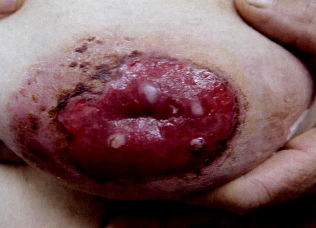
유방 Paget병 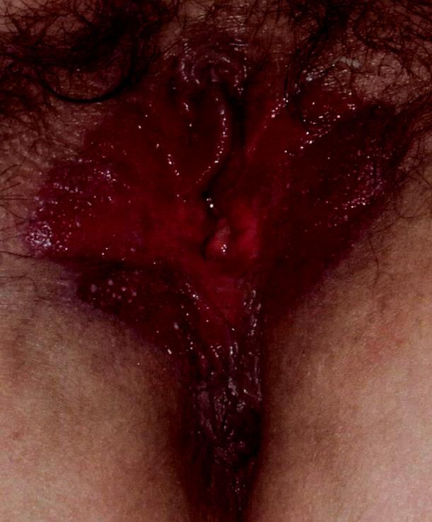
외음부 유방외 Paget병(EMPD) 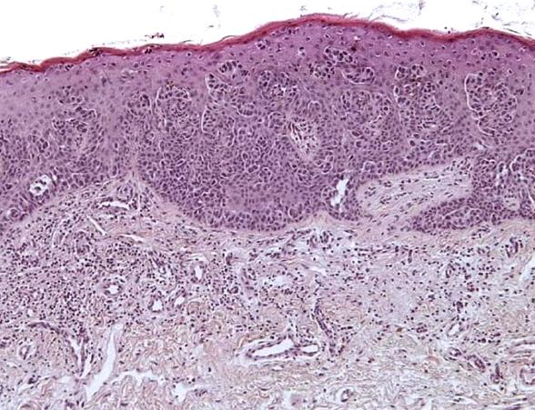
EMPD 조직 소견 📗 족보 연계 이번 족보에서 강의자료만으로 풀 수 있는 출제 문항 없음
4. 기저세포암 (Basal cell carcinoma) 출제 1회 · 중요도 ★★☆☆☆ 한 줄 정의 인간에서 발생하는 가장 흔한 악성종양 ⑭ 으로, 자외선에 오래 노출된 부위에 생기며 천천히 커지고 전이율이 극히 낮다.
분류 Keratinocytic(epidermal) 종양에 속함 ⑭ (p.2 분류표) 원인 자외선(직업적 장기노출보다 간헐적으로 짧게 노출되는 것이 위험), 표피 DNA 손상, 외상·반흔, 방사선. 손바닥·발바닥·입술 홍순에는 발생 없음 → 털피지단위(모낭)에서 유래? · PTCH 조절 유전자의 변이 ⑭ DDx 편평세포암, 각화극세포종, 광선각화증, 피지선 과형성치료 외과적 절제 특히 모즈미세도식수술 , 냉동치료, 방사선치료, CO₂ 레이저 · 예후 낮은 전이율(0.0028–0.55%) ⑭ , 높은 완치율p53 돌연변이는 BCC가 아니라 광선각화증의 원인(강의① p.4)이고, BCC는 PTCH 변이.
📗
족보 연계 ⑭ 기저세포암(BCC)의 특징 — 출제 1회 · 최근 2019 · ★★☆☆☆ [족보: 2019 족보 72번]
5. 편평세포암 (Squamous cell carcinoma) 출제 3회 · 중요도 ★★★★★ 한 줄 정의 표피의 각질형성세포에서 유래하는 악성종양으로 주변 림프절 전이가 잘 된다.
원인 자외선B, 열상, 화학물질(그을음·광유·타르·비소 등), 방사선, HPV(5, 16), 면역억제, 유전 피부질환(눈피부백색증, 색소건피증)증상 결절판상·우췌상·궤양 등 다양. 촉진 시 경결병소의 범위를 초과하여 암세포가 침범DDx 광선각화증, 각화극세포종, 가성암종성 과형성전이 약 6–8%: 일광손상 피부 약 5% · 아랫입술 약 13% · 흉터 약 40% / 전이된 SCC의 5년 생존율 34.4%치료 외과적 절제(특히 모즈), 전기소작, 소파술, 방사선, 냉동재발·전이 고위험 환자 (강의① p.15, 붉은 글씨): ① 부위 입술, 귀 ⑨ ② 크기 2cm 이상 ⑨ ③ 침윤 깊이 4mm 이상 ⑨ / 뼈·근육·신경침범 ④ 조직 소견 불완전 분화 ⑨ , 방추세포형 아형, 종양주위 림프구 소실 ⑤ 발생요인 흉터·만성궤양·만성골수염·자외선조사 ⑥ 재발 병변 ⑨ ⑦ 면역 억제된 환자고위험 수치는 “2cm 이상 / 4mm 이상 / 입술·귀 / 재발”. 다리·1cm·2mm·몸통·well-differentiated는 오답으로 반복 출제.
📗
족보 연계 ⑨ SCC 재발·전이 고위험 — 출제 3회 · 최근 2025 · ★★★★★ [족보: 2025 시험지 81번 · 2022 족보 76번 · 2021 족보 67번]
6. 악성흑색종 (Malignant melanoma) 출제 0회 · 중요도 ★★☆☆☆ 한 줄 정의 멜라닌세포에서 유래하는 악성종양으로, 강의에서는 WHO 아형 분류와 임상 사진을 제시한다.
WHO 분류 major subtypes : Superficial spreading melanoma · Nodular melanoma · Lentigo maligna melanoma · Acral lentiginous melanomaOther : desmoplastic, blue nevus에서 발생, giant congenital nevus에서 발생, 소아 흑색종, naevoid, NOS거대 선천성 색소성 모반에서 흑색종 발생(→ 모반 카드 참조) 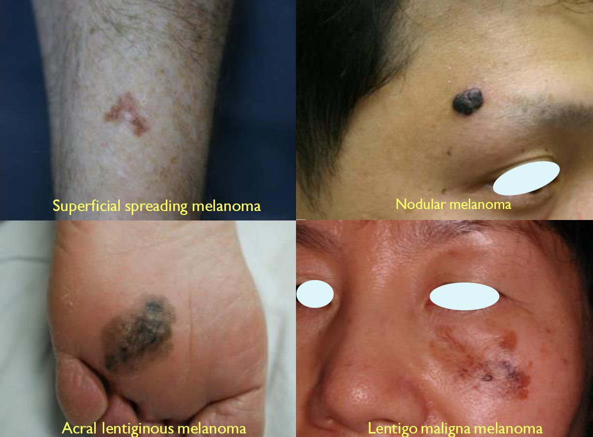
SSM · Nodular · Acral lentiginous · Lentigo maligna melanoma 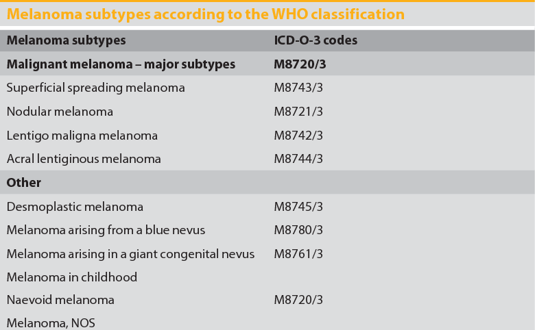
WHO 악성흑색종 아형 표 📗 족보 연계 관련 족보 문항(위험인자: 백인·점 개수·BRAF 등)은 있으나 강의자료에 해당 내용이 없어 제외 → 족보정리 §7
7. 모반(Nevus)과 melanocytic lesion 출제 4회 · 중요도 ★★★★★ 한 줄 정의 모반은 melanocyte에서 유래한 모반세포(nevus cell)로 이루어진 종양이며 hamartoma로서 보통 출생 시 존재하고 성숙 또는 거의 성숙한 구조를 보인다.
Epidermal melanocytic lesion : Freckle, Lentigo, Nevus spilus, Becker’s nevus, Café-au-lait macule ⑦ Dermal melanocytic lesion : Ota nevus, Mongolian spot, Ito nevus, 후천성 양측성 Ota-like macules, dermal melanocytic hamartoma ⑦ Halo nevus : 탈색소 띠(depigmented zone)로 둘러싸인 색소모반선천성 모반 (1) Giant pigmented nevus: 털이 많은 큰 암색 반 + 작고 더 어두운 위성병변, 체간 dermatome 분포, 직경 >20cm, 흑색종 발생 6–12%, 소아 흑색종의 약 40%, 치료 전절제 (2) Small(<1.5cm)·Medium(1.5–20cm)족보 단골: 진피형 = Mongolian spot (표기: “진피 악성 흑색종”, “epidermis 유래 아닌 것”, “악성 흑색종의 유래가 다른 것” 등으로 변형).
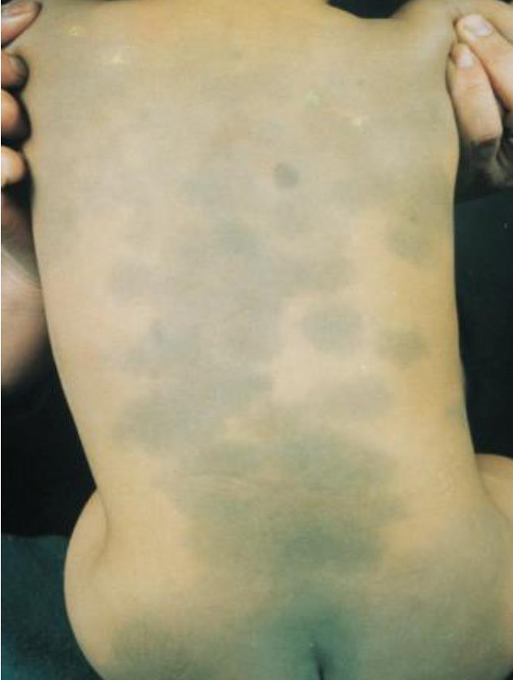
이소성 몽고반(ectopic Mongolian spots) 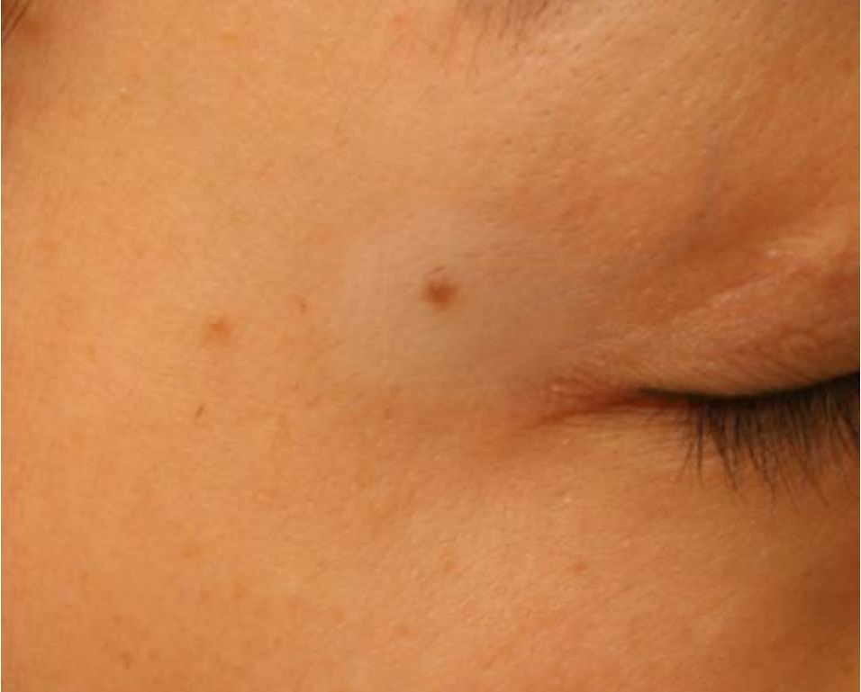
Halo nevus 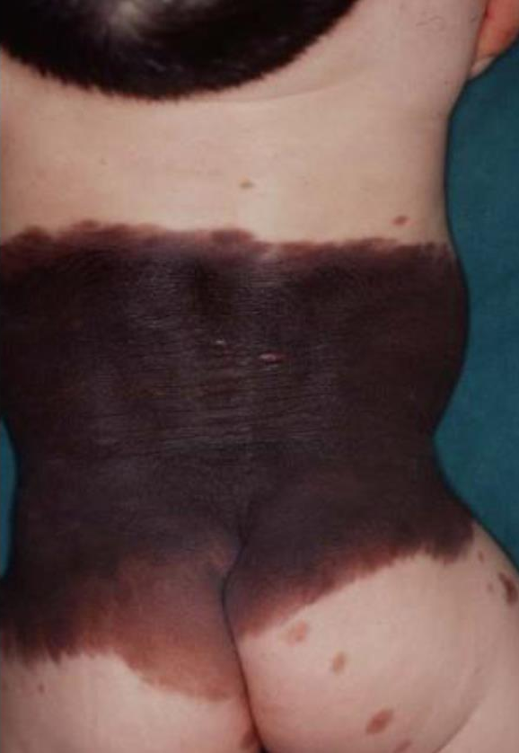
거대 선천성 색소성 모반 📗
족보 연계 ⑦ 표피 vs 진피 melanocytic lesion — 출제 4회 · 최근 2025 · ★★★★★ [족보: 2025 시험지 78번 · 2023 족보 90번 · 2022 족보 77번 · 2021 족보 69번]
2-2. 강의② 색소 이상증 & 피부노화
1. 자외선·적외선과 피부 반응 출제 9회 · 중요도 ★★★★★ 한 줄 정의 UV는 파장에 따라 UVA(320–400nm)·UVB(290–320nm)·UVC(200–290nm)로 나뉘며, 피부에 급성(홍반·tanning)·만성(비후·광노화·암) 반응과 유익/해로운 효과를 일으킨다.
파장 특징 (강의② p.4–7) UVA 320–400 nm (UVAII 320–340 / UVAI 340–400) Melanogenic action ④ · 홍반 유발은 매우 약함(UVB의 1/1000) · 광노화(photoaging)에 더 큰 역할 ④ (지표 햇빛에 약 10배 많음, 연중·종일(흐린 날도), 진피 깊이 침투) · 독성은 간접기전(ROS) ⑤ — porphyrin·riboflavin·quinone 같은 내인성 광감작제UVB 290–320 nm 유리창에 차단됨 ④ · sunburn·suntanning·광발암의 주원인 · 직접 DNA 손상 ④ (CPD: C-C·T-C dimer, 가장 mutagenic / 6-4PP: CPD보다 복구 효율 좋음) · 염증·면역억제, PGE₂ 방출, polyamine 합성↑, 혈관신생UVC 200–290 nm 정상 피부에 홍반을 매우 효율적으로 유발, 살균(germicidal), 오존층에 막혀 지표면 도달 못함 IR 760nm–1mm (IRA 760–1400 / IRB 1400–3000 / IRC 3000nm–1mm) 피부 온도 상승. 최근 IRA는 표피·진피·지방층까지 침투해 손상 가능, IRB·C는 불명
MED (Minimal Erythema Dose): 24시간 후 겨우 인지되는 홍반(sunburn)을 일으키는 최소량. UVB 광자가 UVA 광자보다 평균 약 1000배 더 energetic ④ . 동양인 MED: UVA 50–70 J/cm², UVB 50–70 mJ/cm²유익 효과 : 기분 상승 — 각질세포의 UV 노출 → POMC promoter 자극 → β-endorphin 분비 → 기분 개선·이완해로운 효과 (p.10): UVB = 직접 DNA 손상, UVA = 발색단을 통한 간접 DNA 손상 ⑤ → melanoma, non-melanoma skin cancer, immunosuppression ⑤ , photoaging, burns, cataracts, ocular melanoma, photodermatoses ⑫ 피부 반응 (p.11): 급성 = Erythema(sunburn), Pigmentation(Tanning) ⑤ / 만성 = Thickening, Photoaging, Mutation·skin cancer ⑤ / Immune regulation혼동 주의 — “UVB는 유리창 통과 ✕(차단됨)”, “UVA가 UVB의 1/1000 ✕(UVB 필요량이 1/1000, 광자 에너지는 UVB가 1000배)”, “sunburn·두께 증가 = 만성 ✕/급성”.
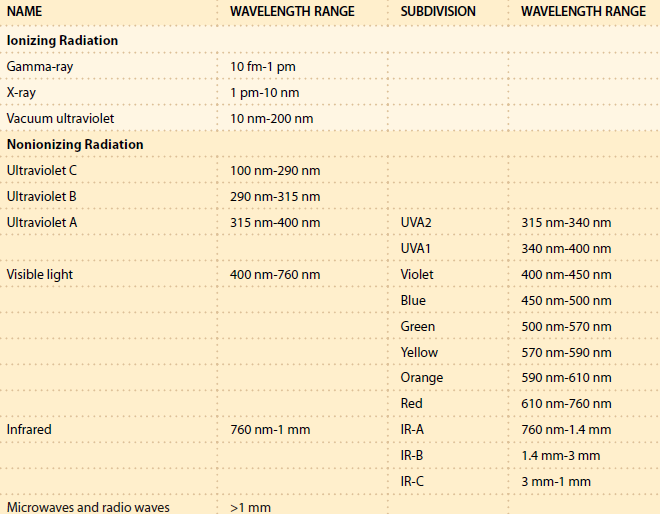
전자기파 분류표 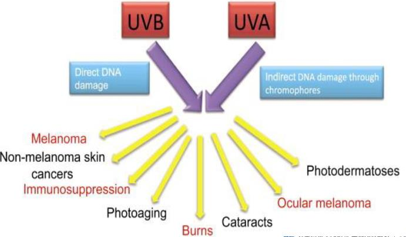
UV의 해로운 작용 도식 (UVB: 직접 DNA 손상 / UVA: 발색단 통한 간접 손상) 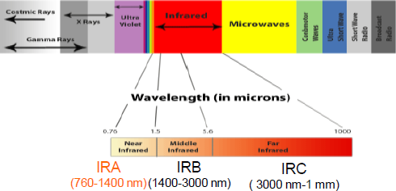
적외선(IRA·IRB·IRC) 파장 📗
족보 연계 ④ UVA vs UVB 특성 — 출제 4회 · 최근 2025 · ★★★★★ [족보: 2025 시험지 76번 · 2023 족보 85번 · 2022 족보 81번 · 2021 족보 25번]
⑤ UV 급성·만성 반응, 노화 분류 — 출제 3회 · 최근 2025 · ★★★★★ [족보: 2023 족보 86번 · 2021 족보 74번 · 2025 시험지 77번]
⑫ UV의 해로운 영향 — 출제 2회 · 최근 16학번본(연도 미상) · ★★★☆☆ [족보: 16학번본-A 40번 · 16학번본-B 객18번]
2. 피부노화 (Aging) 출제 3회 · 중요도 ★★★★★ 한 줄 정의 노화는 시간에 따른 내인성 노화와 UV·바람·열·흡연에 의한 외인성 노화로 나뉘며, 광노화는 외인성 노화에 속한다.
Intrinsic aging(내인노화·climacteric) : 시간 경과에 따른 불가피한 생리적 감퇴 — 건조(거칠음), 주름, 이완, 신생물, 탄력 소실, 상처 회복 지연Extrinsic aging(외인노화) : UV(가장 중요), 바람, 열, 흡연. Photoaging = 만성 일광노출에 의한 변화가 내인성 노화에 중첩된 것 ⑤ 광노화 기전 : UVR → 성장인자 수용체 군집화 + ROS 생성 → NF-κB↑, AP-1↑, TGF-β↓ → 염증성 cytokine↑·MMP↑·procollagen 합성↓·elastin 발현↑ → collagen 생성↓·분해↑, elastin 축적 → solar elastosis, 깊은 주름, 거친 결, 모세혈관확장, 색소침착활성산소(ROS)가 내인·외인 노화 모두에서 큰 역할 → 항산화물질 사용이 노화 예방에 중요 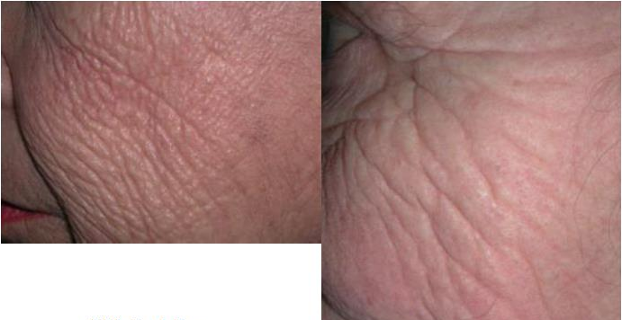
주름(wrinkle) 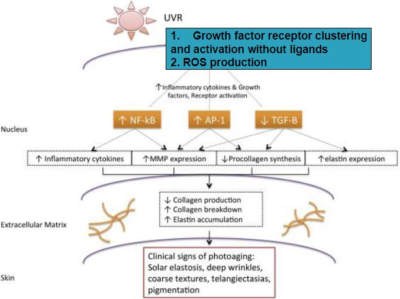
UVR에 의한 광노화 기전 📗
족보 연계 ⑤ UV 급성·만성 반응, 노화 분류 — 출제 3회 · 최근 2025 · ★★★★★ [족보: 2023 족보 86번 · 2021 족보 74번 · 2025 시험지 77번]
3. 광치료 (Phototherapy) 출제 3회 · 중요도 ★★★★★ 한 줄 정의 질환 치료에 도움이 되는 파장의 자외선을 선택적으로 피부에 조사하는 치료이다.
적응증 : 건선, 백반증, 아토피피부염, 피부 T세포 림프종(mycosis fungoides), 광과민성 피부염, 색소성 두드러기 등종류 : 광대역 UVB(290–320nm) · PUVA(photochemotherapy) · 단일파장 UVB(311nm): Narrowband UVB ③ · UVA1(고/중용량) · 엑시머 레이저(308nm; 표적 광치료)NBUVB 장점 (vs PUVA) : 호전이 빠름, 관해가 김, 과도한 홍반 적음, 저렴, 광감작제 불필요, 임신·소아에 사용, 치료 후 눈 보호 불필요, 발암성 낮음, 피부침윤 T세포 제거 효과는 비슷vs 광대역 UVB : 피부 침투가 더 깊음, 진피 T세포 apoptosis 유도 효율↑, 과도한 홍반 적음족보에서는 건선 치료 문항의 정답 선지로 “광선치료는 주로 NBUVB”가 반복 출제([추론]으로 포함 — 족보정리 참조).
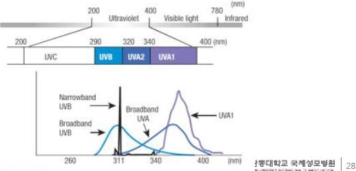
UVB·UVA 파장과 광치료 스펙트럼 (Narrowband UVB 311nm) 📗
족보 연계 ③ 건선 치료 · NBUVB — 출제 3회 · 최근 2025 · ★★★★★ [족보: 2025 시험지 75번 · 2023 족보 84번 · 2021 족보 72번]
4. 백반증 (Vitiligo) 출제 3회 · 중요도 ★★★★★ 한 줄 정의 표피 melanocyte의 소실 ⑧ 이 병리학적 hallmark인 탈색소 질환이다.
역학 인구의 0.1–2%, 소아 또는 젊은 성인(주로 10–30세) · 성별 차이 없음 ⑧ · 유전질환은 아니나 유전소인이 있음 ⑧ (약 20%에서 일등친 백반증)임상형 Segmental · Non-segmental · Focal ⑧ Koebner phenomenon , 모발은 후기 침범 (acrofacial 형 사진)병인 유전요인 + oxidative stress ⑧ → 자가면역. 세포성·체액성 자가면역(cellular and humoral) ⑧ , 이웃 환경 변화(keratinocyte apoptosis↑), melanocytorrhagy, 산화스트레스(세포막 변화), autocytotoxicity동반 자가면역질환 갑상선질환, DM, 부신기능부전, 경피증, SLE, 원형탈모, 중증근무력증, 악성빈혈 · 재색소 치료(스테로이드·calcineurin inhibitor·UV)의 면역억제 효과가 자가면역 가설을 간접 지지광치료 기전 면역: photoimmunosuppression / 멜라닌세포: 모낭 outer root sheath의 비활성 melanocyte가 활성화·증식·이동, keratinocyte의 mitogen 방출 자극, 이동 증진“여자>남자 ✕ / 멘델 유전 ✕ / 자가면역 무관 ✕ / cellular만 ✕(둘 다) / oxidative stress 무관 ✕” 선지가 반복 출제.
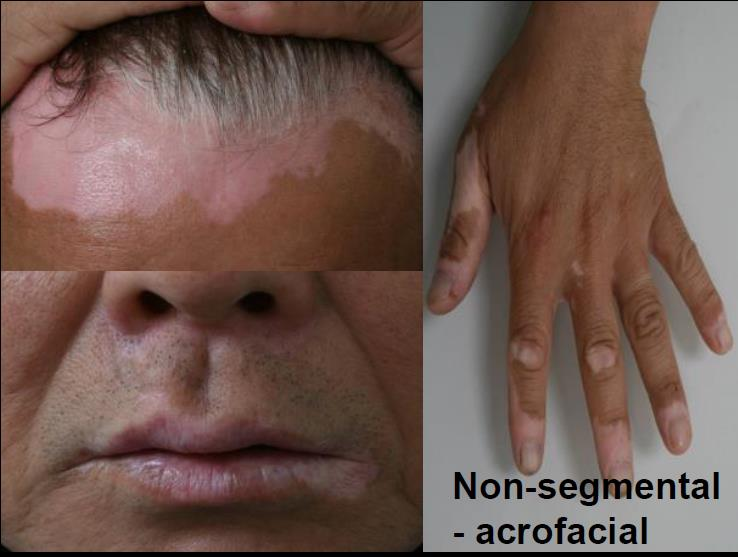
📌 2025 · 2022 · 2021 족보 사진 Non-segmental (acrofacial) 백반증 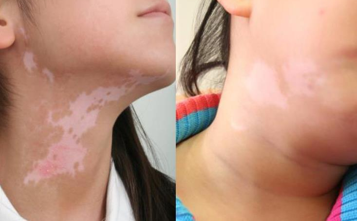
Segmental type 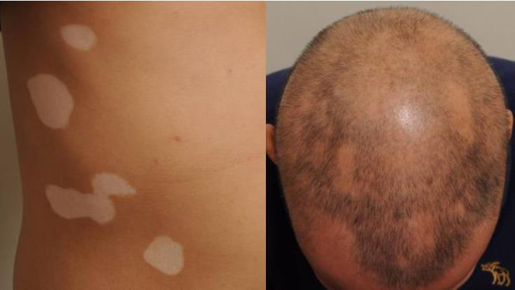
백반증 병변 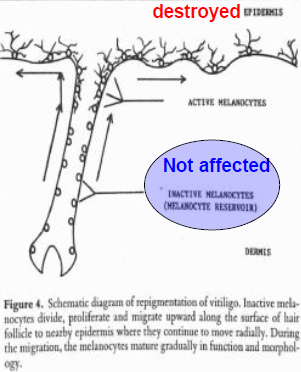
광치료 시 모낭을 통한 재색소 도식 📗
족보 연계 ⑧ 백반증(Vitiligo) — 출제 3회 · 최근 2025 · ★★★★★ [족보: 2025 시험지 79번 · 2022 족보 83번 · 2021 족보 75번]
5. 멜라닌세포·과다색소침착(기미) 출제 0회 · 중요도 ★☆☆☆☆ 한 줄 정의 기미(melasma)는 햇빛 노출 부위에 생기는 불규칙한 연갈색~회갈색 반이다.
Melanocyte neural crest 기원, dendrite, 표피 기저층에 위치, MC : KC = 1 : 10, epidermal melanin unit과다색소침착 목록 Melasma(기미), Peutz-Jeghers syndrome, PUVA lentigines(흑색점), Riehl’s melanosis(흑색증), Dyschromatosis universalis hereditaria(유전전신색소이상증), Dohi acromelanosis(말단흑색증), Reticulate acropigmentation of KitamuraMelasma(Chloasma faciei) 그리스어 khloasma = greenness. 깊이별 epidermal / dermal·mixed(melanophage 존재), 임상형 centrofacial · malar · mandibular치료 국소 미백제 — Kligman formula (hydroquinone 5% + tretinoin 0.1% + dexamethasone 0.1%), kojic acid, glycolic acid, arbutin, α-bisabolol, tretinoin / 경구 tranexamic acid / chemical peel(TCA, glycolic acid, oxygen peel) / 광치료(low-fluence 1,064-nm QSNY laser, dye laser, 830·850nm LED, IPL)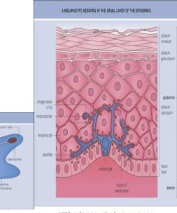
표피 기저층의 melanocyte와 epidermal melanin unit 📗 족보 연계 이번 족보에서 강의자료만으로 풀 수 있는 출제 문항 없음
2-3. 강의③ 구진비늘(구진인설성) 질환
강의 목록: 건선 · 장미색잔비늘증 · 모공성홍색잔비늘증 · 박탈피부염 · 유건선 · 흰색잔비늘증 · 편평태선 · 광택태선 · 선상태선 (제공된 슬라이드는 건선~편평태선, 박탈피부염·흰색잔비늘증·광택태선·선상태선 슬라이드 없음 → [자료 근거 없음])
1. 건선 (Psoriasis) 출제 12회 · 중요도 ★★★★★ 한 줄 정의 은백색의 인설을 동반한 구진과 판을 나타내는 흔한 만성·재발성 염증성 피부질환이다.
정의 둥글고 경계가 뚜렷한 홍반성 건조 판 + 회백~은백색의 겹겹이(imbricated, lamella) 인설. 호발 scalp, elbows, knees, 사지 신측, 천골부, 손발톱, 배꼽역학 미국 2% · 한국 약 1% ① / 초발 20대, 10대, 30대 ① (조기초발·만기초발 건선) / 가족력 백인 1/3, 한국 약 25% ① 악화요인 피부외상 ① , 감염(β-streptococcal infection → 물방울양 건선), 기후(겨울에 악화·위도 높은 지역), 건조한 피부, 스트레스 ① , 약물(lithium, β-blocker, chloroquine, NSAID[indomethacin 포함])병인 유전요인 + 면역병인(initiation → amplification[급성] → maintenance[만성]); plasmacytoid DC·myeloid DC·T cell·keratinocyte·neutrophil, cytokine·chemokine임상형 Psoriasis vulgaris(=plaque) · Guttate(=eruptive) · Inverse(=flexural) · Pustular(generalized vs localized) · Psoriatic erythroderma임상 특징 Koebner’s phenomenon ⑪ = isomorphic response, 사소한 외상 부위에도 전형적 병변 출현(편평태선·lichen nitidus·PRP에서도 관찰) / Auspitz sign: 인설을 강제로 제거할 때 점상출혈(진피유두 끝 위 표피가 얇아져서) / 지도설 / 손발톱 pitting(건선 환자의 30–50%)건선성 관절염(PsA) 건선(0.5–3%)의 6–42% ② 에서 발생, 일반인구 0.05–1% ② (seropositive RA 수준) / 발병 peak 35–40세 ② / 성별 차이 없음 ② 치료 ① 외용: 1st line Emollients, Glucocorticoids, Vitamin D3 analogs ③ / 2nd line Dithranol, Tazarotene, Tar ③ ② 광치료·광화학요법: PUVA, NBUVB ③ (UVB: broadband vs narrowband) ③ 전신치료: Methotrexate, Cyclosporine, Retinoids, Biologics ③ 1차 외용제 = emollient·glucocorticoid·vit D3 analog (retinoid는 전신), 광치료는 NBUVB 가 중심, “치료제는 모두 부작용이 적어 편하게 사용 ✕”.
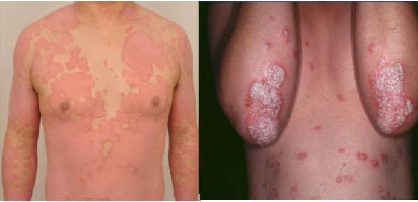
📌 2025 · 2023 · 2022 · 2021 족보 사진 건선 임상 사진 (체간 판상 건선 / 유방하 건선) 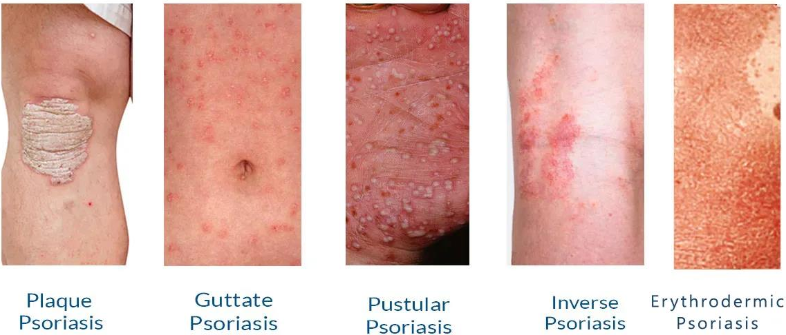
건선 유형: plaque · guttate · pustular · inverse · erythrodermic 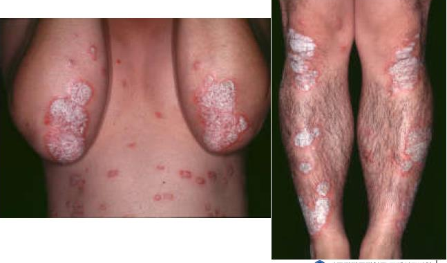
Plaque type 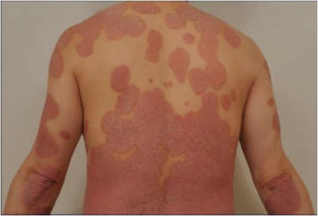
Plaque type 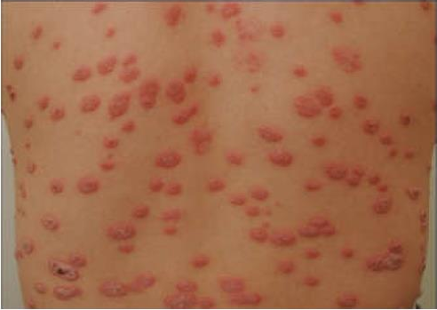
Plaque type 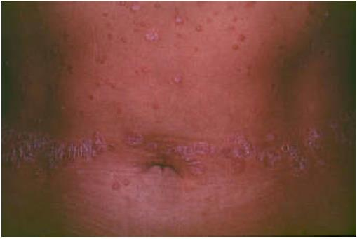
Koebner 현상 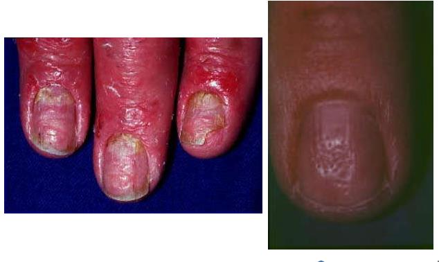
손발톱 건선 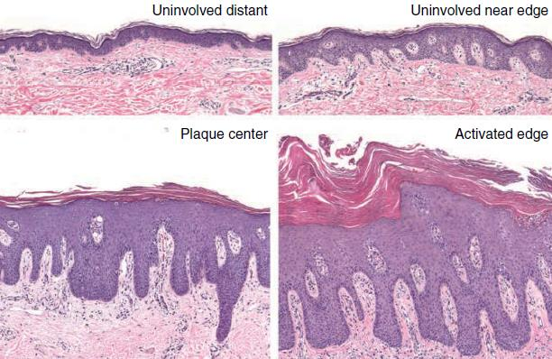
건선의 조직병리학 소견 📗
족보 연계 ① 건선의 역학·악화요인 — 출제 4회 · 최근 2025 · ★★★★★ [족보: 2025 시험지 73번 · 2023 족보 82번 · 2022 족보 72번 · 2021 족보 70번]
② 건선성 관절염(PsA) — 출제 4회 · 최근 2025 · ★★★★★ [족보: 2025 시험지 74번 · 2023 족보 42번 · 2022 족보 79번 · 2021 족보 71번]
③ 건선 치료 · NBUVB — 출제 3회 · 최근 2025 · ★★★★★ [족보: 2025 시험지 75번 · 2023 족보 84번 · 2021 족보 72번]
⑪ Koebner 현상 — 출제 1회 · 최근 16학번본(연도 미상) · ★★☆☆☆ [족보: 16학번본-A 38번]
2. 장미색잔비늘증 (Pityriasis rosea) 출제 1회 · 중요도 ★★☆☆☆ 한 줄 정의 원인 불명의 가벼운 염증성 발진(exanthem)으로 연어색 구진·반을 보인다.
연어색(salmon-colored) 구진과 반, 병변 가장자리에 collarette 모양 인설(처음엔 분리되나 융합 가능) 대개 단일 herald patch(mother patch) ⑬ 로 시작 → 1–2주 후 새 병변이 빠르게 퍼짐 → 3–8주에 자연 소실 병변의 장축이 피부 할선(lines of cleavage)과 평행하게 배열 진단에 유용한 sign = Herald patch (Koebner·Auspitz·Wickham·Pterygium은 오답 선지).
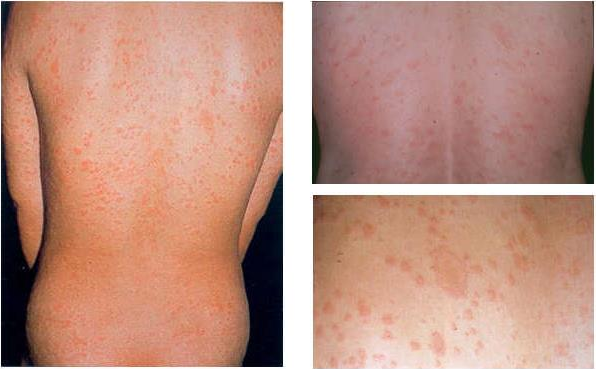
📌 2019 족보 해설: 시험에 강의록과 동일한 사진 장미색잔비늘증 📗
족보 연계 ⑬ 장미색잔비늘증 · herald patch — 출제 1회 · 최근 2019 · ★★☆☆☆ [족보: 2019 족보 71번]
3. 모공성홍색잔비늘증 (Pityriasis rubra pilaris, PRP) 출제 0회 · 중요도 ★☆☆☆☆ 한 줄 정의 작은 모공성 구진, 노르스름한 분홍색 인설반, 융합된 손발바닥 각화증을 특징으로 하는 만성 피부질환이다.
모공성 구진: 뾰족한 갈색 핀머리 크기, 중심에 각질 마개(horny plug) 두피의 인설·홍반으로 시작 · 병변 내 정상 피부 섬(small islands of normal skin) 손발바닥 각화증 + 균열 경향, 발 측면까지 퍼져 “sandal” 모양 · 손발톱은 둔하고 거칠고 두꺼우며 부서지기 쉬움(pit 거의 없음) 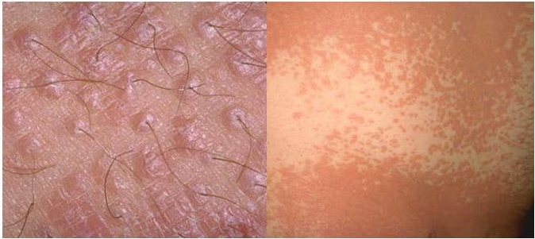
PRP 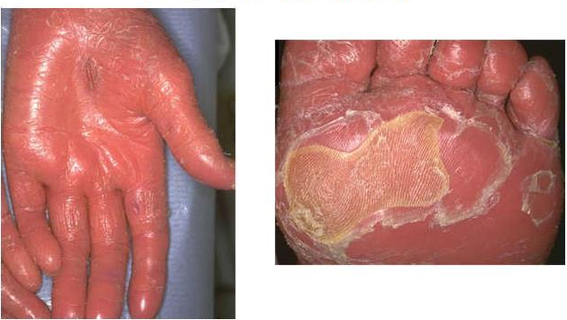
손발바닥 각화증 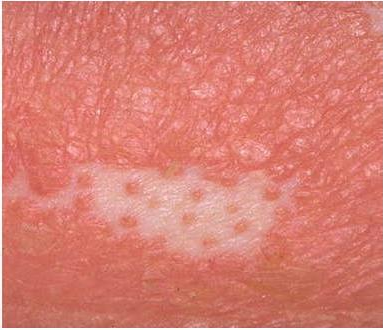
정상 피부 섬(islands of normal skin) 📗 족보 연계 이번 족보에서 강의자료만으로 풀 수 있는 출제 문항 없음
4. 유건선(Parapsoriasis)과 태선모양잔비늘증(Pityriasis lichenoides) 출제 0회 · 중요도 ★☆☆☆☆ 한 줄 정의 유건선은 만성·치료저항성이며 자각증상이 없는 반구진 인설성 발진군이다.
Small plaque (소판상, 1–5cm): 림프종으로 진행하지 않음 · Large plaque (대판상, 5–15cm): 10–30%에서 T-cell lymphoma로 진행(특히 심한 소양증 동반)Pityriasis lichenoides : PLEVA(=Mucha-Haberman병; self-limiting, 반·구진·수포의 다형성 발진) / PLC(chronica; 홍반·황색 인설성 반과 태선양 구진이 서서히 발생, 수개월~수년 후 자연 소실)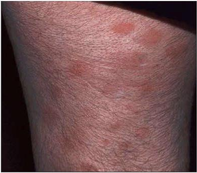
Small plaque parapsoriasis 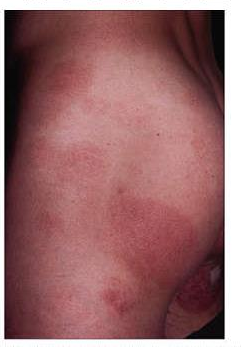
Large plaque parapsoriasis 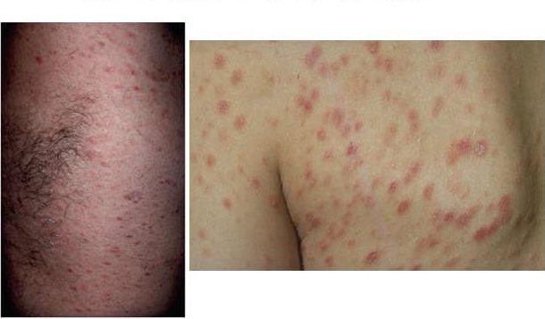
Pityriasis lichenoides chronica 📗 족보 연계 이번 족보에서 강의자료만으로 풀 수 있는 출제 문항 없음
5. 편평태선 (Lichen planus) 출제 3회 · 중요도 ★★★★☆ 한 줄 정의 피부·모낭·점막을 침범하는 흔한 소양성 염증성 질환으로 작고 보랏빛의 편평한 다각형 구진이 특징이다.
Pathognomonic 작고 violaceous한 편평 다각형 구진(원발진) · Wickham’s striae: 병변을 가로지르는 회백색 점(puncta) 또는 줄(streaks) ⑩ 호발 굴측 손목, 체간, 내측 대퇴, 정강이, 손등, 귀두 · Koebner phenomenon(+)손발톱 pterygium formation이 특징적, 종주 홈(longitudinal grooving), 근위·원위 조갑박리, ridging, splitting, midline fissure구강 Reticular(볼 안쪽) · Atrophic · Ulcerative(erosive): premalignant condition(전암 상태) ⑩ 생식기 귀두: 편평 다각형 구진 또는 고리 모양 배열 / 음순·항문: 침연(maceration)으로 희게 보임회백색 띠 = Wickham’s striae. Auspitz sign(건선), Herald patch(장미색잔비늘증), Pterygium(LP 손톱)과 구분.
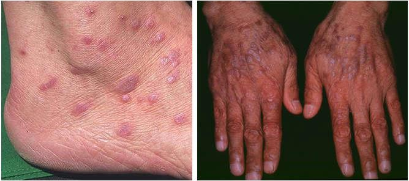
피부 병변(발목·손등) 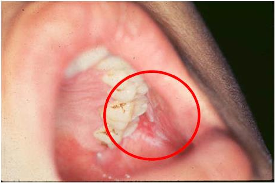
구강 편평태선 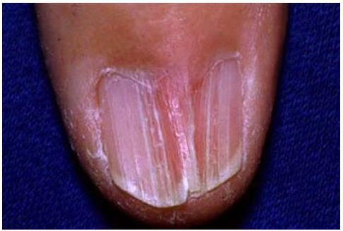
손톱 편평태선(pterygium) 📗
족보 연계 ⑩ 편평태선 · Wickham striae — 출제 3회 · 최근 2019 · ★★★★☆ [족보: 2019 족보 70번 · 16학번본-A 44번 · 16학번본-C 3번]
3. 개념 비교
피부암·상피내암 비교 구분 BCC SCC Bowen병 정의 인간에서 가장 흔한 악성종양 ⑭ 표피 각질형성세포 유래 악성종양 표피내 국한된 SCC (in situ) 전이 극히 낮음(0.0028–0.55%) 림프절 전이 잘 됨(6–8%) 약 5%가 SCC로 이행 원인 UV(간헐적 노출), PTCH 변이 UVB, 화학물질, 방사선, HPV 5·16, 면역억제 일광(노출부), 비소·방사선·HPV16(비노출부) 치료 외과적 절제(특히 모즈), 냉동, 방사선, CO₂ 레이저(Bowen은 전기소작·광역동도)
Paget병 비교 유방 Paget 유방외 Paget 부위 유두·유륜 항문·성기·서혜부·액와 기전 유방 유선관 선암이 표피로 전이 일차: 아포크린샘 분화 예정 줄기세포 악성화 / 이차: 기저 내부 장기암 치료 유방절제술 외과적 절제(특히 Mohs)
Epidermal vs Dermal melanocytic lesion Epidermal Dermal Freckle, Lentigo, Nevus spilus, Becker’s nevus, Café-au-lait macule ⑦ Ota nevus, Mongolian spot , Ito nevus, 후천성 양측성 Ota-like macules, dermal melanocytic hamartoma ⑦
UVA · UVB · UVC 구분 UVA UVB UVC 파장 320–400nm 290–320nm 200–290nm 유리창 (강의록 언급 없음) 차단 ④ 지표 도달 X(오존층) 주요 작용 melanogenic, 광노화 ④ , 진피 침투sunburn·tanning·광발암, 직접 DNA 손상 ④ 살균, 홍반 매우 효율적 홍반 필요량(MED) 50–70 J/cm² 50–70 mJ/cm² (1/1000) — 광자 에너지 낮음 UVA의 약 1000배 —
Segmental vs Non-segmental 백반증 Segmental Non-segmental 발병 조기(주로 소아) 평생 지속 경과 빠른 진행 후 안정 예측 불가한 확산 분포 Dermatomal (acrofacial 등) · Koebner phenomenon 모발 조기 침범(leukotrichia) 후기 침범
구진비늘질환 구분 질환 핵심 단서 건선 은백색 층상 인설, Koebner ⑪ , Auspitz sign, 손발톱 pitting, 관절염 장미색잔비늘증 Herald patch ⑬ , collarette 인설, 할선과 평행, 3–8주 자연 소실모공성홍색잔비늘증 모공성 구진+horny plug, 정상 피부 섬, 손발바닥 각화증(sandal) 편평태선 violaceous 편평 다각형 구진, Wickham’s striae ⑩ , pterygium, 구강 erosive형 전암 유건선 small(1–5cm, 림프종 X) vs large(5–15cm, T-cell lymphoma 10–30%) 태선모양잔비늘증 PLEVA(급성·다형성 발진) vs PLC(만성·태선양 구진)
4. 개념 간 관계
과다 일광노출 + 하얀 피부 → p53 변이 → subclinical AK → 광선각화증 → 편평세포암 → 림프절 전이
UVR → ROS·성장인자 수용체 군집화 → NF-κB↑ AP-1↑ TGF-β↓ → MMP↑ procollagen↓ elastin↑ → solar elastosis·주름 (광노화)
유전요인 + oxidative stress → 세포성·체액성 자가면역 → melanocyte 소실 → 백반증(Segmental / Non-segmental / Focal)
피부외상·감염·약물·스트레스 → 건선 악화 / Koebner 현상 → plaque·guttate·pustular·inverse·erythroderma → PsA(6–42%)
건선 치료 → 1차 외용(emollient·steroid·vit D3) → 2차 외용(dithranol·tazarotene·tar) → 광치료(NBUVB·PUVA) → 전신(MTX·cyclosporine·retinoid·biologics)
5. 족보와 연결된 핵심 개념 (출제 빈도 순)
① 건선의 역학·악화요인 — 출제 4회 · 최근 2025 · ★★★★★ · 강의 위치 강의③ p.5–7, 11[족보: 2025 시험지 73번 · 2023 족보 82번 · 2022 족보 72번 · 2021 족보 70번] → 정답: ③ / ③ / ③ / ③
② 건선성 관절염(PsA) — 출제 4회 · 최근 2025 · ★★★★★ · 강의 위치 강의③ p.18[족보: 2025 시험지 74번 · 2023 족보 42번 · 2022 족보 79번 · 2021 족보 71번] → 정답: ② / ② / ① / ①
④ UVA vs UVB 특성 — 출제 4회 · 최근 2025 · ★★★★★ · 강의 위치 강의② p.4–6[족보: 2025 시험지 76번 · 2023 족보 85번 · 2022 족보 81번 · 2021 족보 25번] → 정답: ① / ① / ① / ①
⑥ 암전구증(precancerous) 목록 — 출제 4회 · 최근 2025 · ★★★★★ · 강의 위치 강의① p.4[족보: 2025 시험지 80번 · 2023 족보 37번 · 2022 족보 75번 · 2021 족보 68번] → 정답: ⑤ / ⑤ / ⑤ / ⑤
⑦ 표피 vs 진피 melanocytic lesion — 출제 4회 · 최근 2025 · ★★★★★ · 강의 위치 강의① p.19–20[족보: 2025 시험지 78번 · 2023 족보 90번 · 2022 족보 77번 · 2021 족보 69번] → 정답: ③ / ④ / ③ / ③
③ 건선 치료 · NBUVB — 출제 3회 · 최근 2025 · ★★★★★ · 강의 위치 강의③ p.21–23, 강의② p.17–18[족보: 2025 시험지 75번 · 2023 족보 84번 · 2021 족보 72번] → 정답: ③ / ③ / ③
⑤ UV 급성·만성 반응, 노화 분류 — 출제 3회 · 최근 2025 · ★★★★★ · 강의 위치 강의② p.10–12[족보: 2023 족보 86번 · 2021 족보 74번 · 2025 시험지 77번] → 정답: ① / ① / ②
⑧ 백반증(Vitiligo) — 출제 3회 · 최근 2025 · ★★★★★ · 강의 위치 강의② p.22–23, 26–28[족보: 2025 시험지 79번 · 2022 족보 83번 · 2021 족보 75번] → 정답: ③ / ④ / ③
⑨ SCC 재발·전이 고위험 — 출제 3회 · 최근 2025 · ★★★★★ · 강의 위치 강의① p.15[족보: 2025 시험지 81번 · 2022 족보 76번 · 2021 족보 67번] → 정답: ② / ④ / ④
⑩ 편평태선 · Wickham striae — 출제 3회 · 최근 2019 · ★★★★☆ · 강의 위치 강의③ p.37–38[족보: 2019 족보 70번 · 16학번본-A 44번 · 16학번본-C 3번] → 정답: ③ / ① / ②
⑫ UV의 해로운 영향 — 출제 2회 · 최근 16학번본(연도 미상) · ★★★☆☆ · 강의 위치 강의② p.9–10[족보: 16학번본-A 40번 · 16학번본-B 객18번] → 정답: ④ / ③
⑪ Koebner 현상 — 출제 1회 · 최근 16학번본(연도 미상) · ★★☆☆☆ · 강의 위치 강의③ p.19[족보: 16학번본-A 38번] → 정답: Koebner's phenomenon
⑬ 장미색잔비늘증 · herald patch — 출제 1회 · 최근 2019 · ★★☆☆☆ · 강의 위치 강의③ p.24[족보: 2019 족보 71번] → 정답: ③
⑭ 기저세포암(BCC)의 특징 — 출제 1회 · 최근 2019 · ★★☆☆☆ · 강의 위치 강의① p.2, 12–13[족보: 2019 족보 72번] → 정답: ⑤
6. 시험 직전 핵심 정리 정의 광선각화증 = 편평세포암으로 이행 가능한 암전구증 / Bowen = SCC in situ / BCC = 인간에서 가장 흔한 악성종양 ⑭ , PTCH 변이 ⑭ / 백반증 = 표피 melanocyte 소실 ⑧ 숫자 건선 미국 2%·한국 1%, 가족력 한국 25%, 초발 10~30대 ① / PsA 6–42%, peak 35–40세, 성별차 없음 ② / SCC 고위험 2cm·4mm ⑨ / UVA 320–400, UVB 290–320, UVC 200–290순서·분류 암전구증 목록 AK·비소각화증·백판증·피각·거대모반·만성방사선피부염·XP·Bowen·Queyrat ⑥ (IP ✕) / 진피형 Ota·Mongolian·Ito ⑦ / 백반증 임상형 Segmental·Non-segmental·Focal ⑧ 비교·함정 UVA = melanogenic·광노화 ④ , UVB = 유리창 차단·직접 DNA 손상 ④ / UV 급성 = 홍반·tanning ⑤ , 만성 = 비후·광노화·암 / 광노화 = 외인성치료 건선 1차 외용 = emollient·steroid·vit D3 analog ③ , 광치료는 NBUVB ③ , retinoid·MTX·cyclosporine = 전신예외·단서 Wickham’s striae ⑩ (편평태선) · Herald patch ⑬ (장미색잔비늘증) · Koebner ⑪ (건선·LP·백반증 non-segmental) · UV 해로운 영향 photodermatoses ⑫ 실제 족보 출제 사진 📌 건선 임상 사진(강의③ p.11), 📌 non-segmental 백반증 사진(강의② p.24), 장미색잔비늘증 사진(강의③ p.25)근거 표기: [추론] = 강의자료 근거로 소거·추론한 판단 / [확인 필요] = 자료 불충분 / [판독 불가] = 원문 소실 / [자료 근거 없음] = 강의자료에 없음. 이미지는 제공된 강의 PDF의 원본 이미지 객체에서 필요한 영역만 무손실로 추출했으며 원본 해상도를 유지했습니다(강의 PDF 자체가 저해상도 슬라이드 이미지 — 업스케일하지 않음). 이 문서에는 외부 자료를 사용하지 않았습니다.